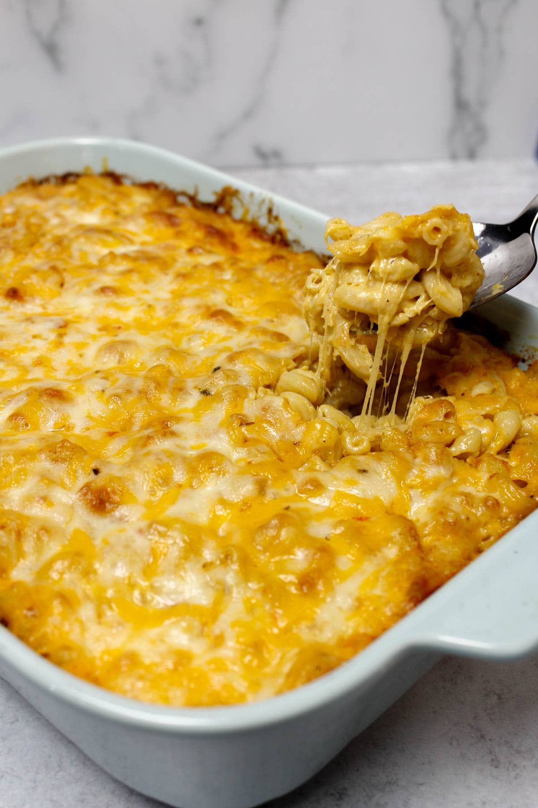

Do you want to make the most delicious Mac & Cheese to wow your family?
Well, do I have the recipe for you! Dave's FAMOUS Mac & Cheese! A dish so beloved in
my household that I've been forced to make it EVERY SINGLE HOLIDAY! Slated to wow
your family, and super easy to make!
Step 1: Preparation
 Here is what you'll need to get started:
- Deep Aluminum Baking Pan
- Aluminum Foil
- Boiling Pot
- Sauce Pot
- Wooden Slotted Spoon
- Measuring Cup
- Strainer
- Stick of Unsalted Butter
- 1/4 Gallon of Whole Milk
- 2 64oz. Containers of Low Sodium Chicken Broth
- 3 Packs of Velveeta Shells & Cheese
- Minced Garlic
- Black Pepper
- Flour
- Shredded Smoked Cheddar Cheese
- Shredded Mexican Blend Cheese
These specific cheeses are optional and you can instead pick whatever cheese you like.
Step 2: Cooking Instructions
- Preheat oven to 375°
- Add the two containers of Chicken Broth to the Boiling Pot
- Add 3 cups of water to the pot
- Set pot to boil on high heat
- Once you have a rolling boil, add Velveeta Shells to the pot
- While that is going, add two half cup sticks of butter to sauce pot
- after butter has fully melted, add one cup of flour to pot
- Stir flour evenly into mixture until it fully liquifies, keep stirring for the rest of the steps
- Don't forget to stir the Vevlveeta Shells in the boiling pot occasionally as well!
- Stir until flour becomes "Cookie Brown" then start slowly adding milk, a little at a time, stir until smooth
- Repeat adding milk and keep stirring until sauce has a creamy texture to your liking and level of thickness
- Add Velveeta cheese packets, 2 tablespoons of minced garlic, and 2 tablespoons of pepper to your sauce
- Mix all ingredients in thoroughly until sauce has even color
- Strain Velveeta Shells if they have gotten a soft slightly chewy texture, take boiling pot off heat
- Add your sauce to the boiling pot, and add back the Velveeta Shells as well
- Stir the mixture untill all shells are evenly coated
- Add all to the baking pan
- Cover everything with with your cheeses, mix until evenly coated, repeat once
- Place baking pan in the oven for 15 minutes or until cheese has gotten a crust on top
- Pull out of oven, cover in foil
- Let cool for 10-15 minutes
- Enjoy!